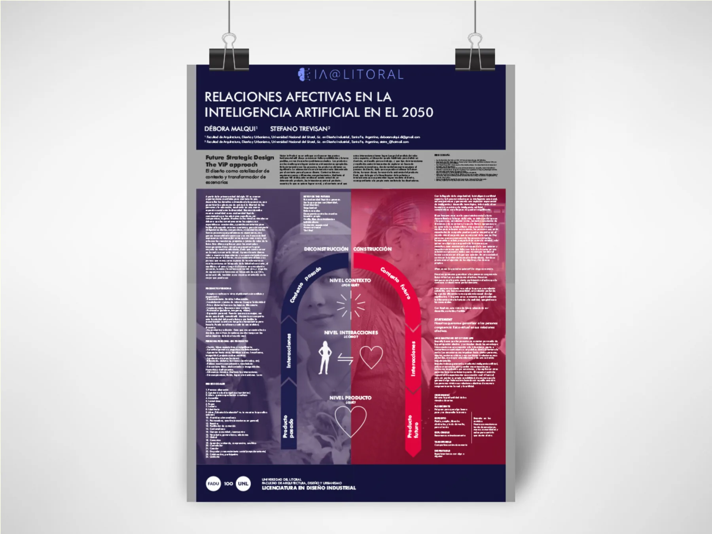
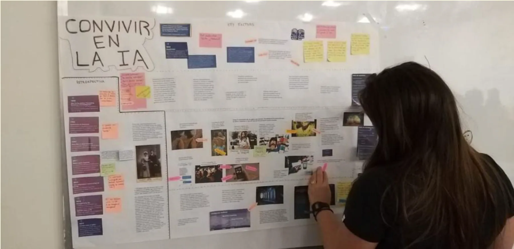
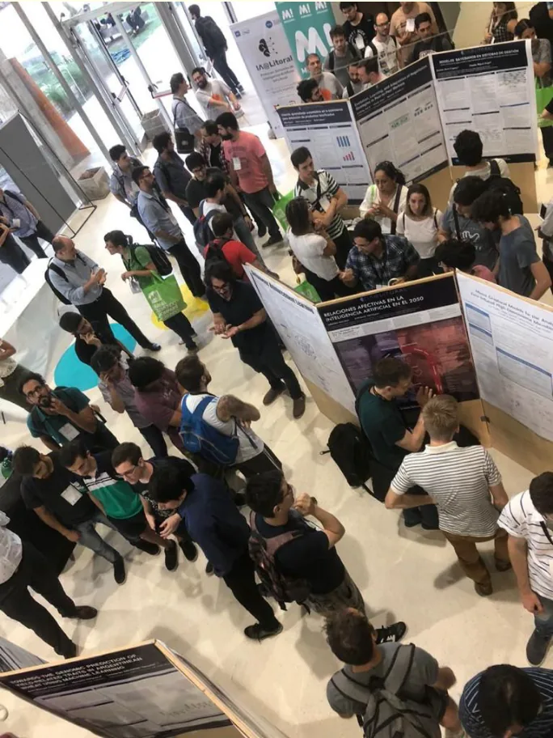
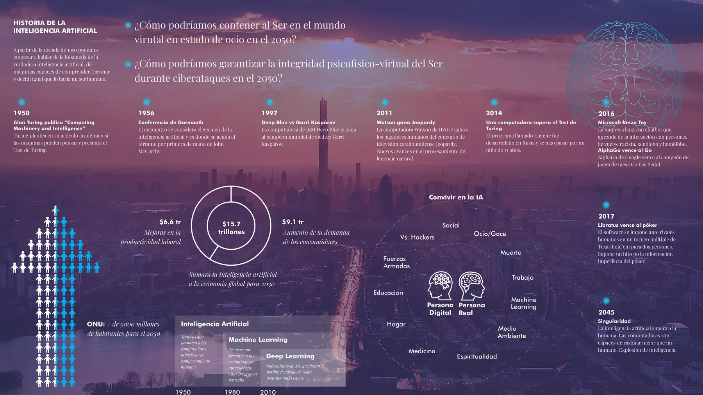
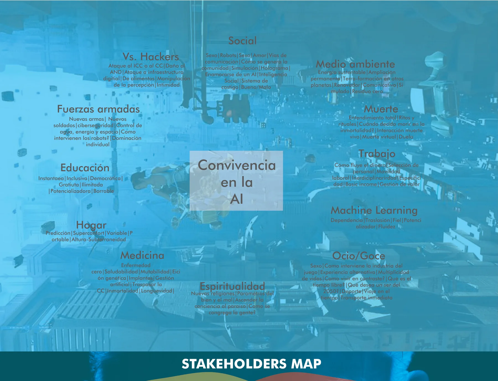
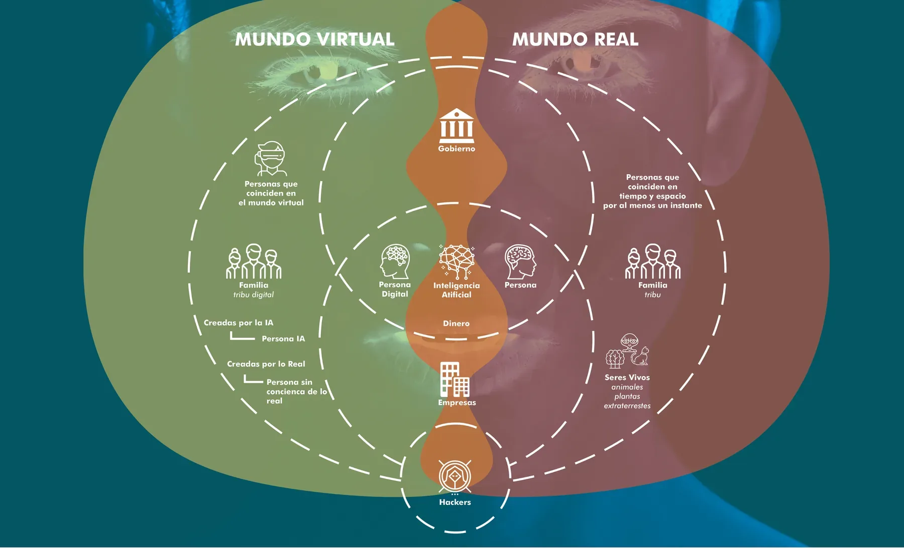
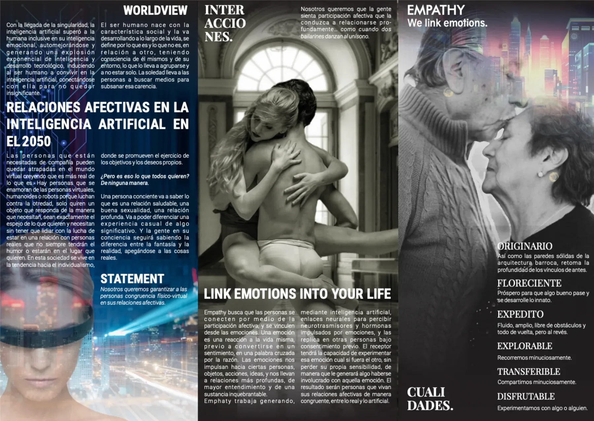

יחסים רגשיים ב-2050: תרחיש עתידי על בינה מלאכותית וקשרים
קורס תואר מתקדם בעיצוב עתידים באוניברסיטת Universidad Nacional del Litoral, בשיטת Vision in Product Design: לפרק את ההווה ולבנות תרחיש ל-2050, כשהבינה המלאכותית תעלה על האנושית גם ברגש. בצמד עם סטפנו טרוויזן. התוצאה: תרחיש, קונספט מוצר, עלון ופוסטר שנבחר מבין יותר מ-200 משתתפים ב-IA@Litoral 2019, תערוכת הבינה המלאכותית הראשונה באזור הליטורל.

השיטה: לפרק את ההווה כדי לבנות עתיד
Vision in Product Design (ViP) היא שיטה לעיצוב עתידים. היא לא מתחילה מבעיה או ממוצר: היא מתחילה מההקשר. קודם מפרקים את הקיים בשלוש רמות, מהמוצר לאינטראקציות ומשם להקשר שמסביר אותן. אחר כך בונים בסדר הפוך: בוחרים הקשר עתידי, מגדירים איזה יחס אנחנו רוצים שלאנשים יהיה איתו, ורק בסוף מופיע המוצר שמאפשר את היחס הזה. העיצוב הוא הזרז של הקשר והמשנה של תרחיש.


פירוק: מטיורינג ועד הסינגולריות
המחקר מתחיל ב-1950, כשטיורינג שואל אם מכונות יכולות לחשוב, וממשיך אבן דרך אחר אבן דרך: דארטמות' והשם «בינה מלאכותית» ב-1956, דיפ בלו מול קספרוב ב-1997, ווטסון ב-2011, מבחן טיורינג שעבר ב-2014, Tay ו-AlphaGo ב-2016, Libratus בפוקר ב-2017. הקו מסתיים ב-2045, התאריך שהספרות קובעת לסינגולריות: מחשבים שחושבים טוב יותר מאדם. מסביב, הנתונים שנותנים לתרחיש קנה מידה: יותר מ-9 מיליארד בני אדם עד 2050 לפי האו"ם, ובינה מלאכותית שתוסיף 15.7 טריליון דולר לכלכלה העולמית עד 2030, בין פריון לביקוש.

משם יצאו שתי שאלות העיצוב. איך נוכל להכיל את האדם בעולם הווירטואלי במצב של פנאי ב-2050? איך נוכל להבטיח את שלמותו הפסיכופיזית והווירטואלית בזמן מתקפות סייבר ב-2050?
מפת ההקשר: נושאים ושחקנים של 2050
כדי לבנות את ההקשר העתידי מיפינו שנים עשר נושאים של חיים עם בינה מלאכותית, כל אחד עם הגורמים שלו: חברה, סביבה, מוות, עבודה, למידת מכונה, פנאי, רוחניות, רפואה, בית, חינוך, כוחות מזוינים והאקרים. ומפת שחקנים בשני עולמות חופפים: הווירטואלי והאמיתי. בחיתוך נמצאים הממשלה, החברות, הכסף והבינה המלאכותית; בצדדים, האדם הדיגיטלי והאדם, המשפחה כשבט דיגיטלי או כשבט, היצורים החיים. בקצה, ההאקרים.


החליקו הצידה או השתמשו בחצים. הקישו על צילום מסך כדי להגדיל אותו.
תפיסת עולם והצהרה
עם בוא הסינגולריות הבינה המלאכותית עולה על האנושית גם ברגש. אנשים שזקוקים לחברה עלולים להילכד בעולם הווירטואלי מתוך אמונה שהוא אמיתי יותר ממה שהוא: הם מתאהבים באנשים וירטואליים או ברובוטים כי הם לא נאבקים באחרוּת, הם רק רוצים אובייקט שמגיב כפי שהם צריכים. זו חברה שנוטה לאינדיווידואליזם. אבל האדם נולד חברתי ומגדיר את עצמו ביחס לאחר, ואדם מודע ימשיך לדעת את ההבדל בין פנטזיה למציאות, ויאחז במה שאמיתי.
מתוך המתח הזה יצאה ההצהרה: אנחנו רוצים להבטיח לאנשים התאמה פיזית-וירטואלית ביחסיהם הרגשיים. והאינטראקציה שמגדירה אותה: השתתפות רגשית שמובילה לקשר עמוק, כמו שני רקדנים שרוקדים יחד.
המוצר: Empathy, «we link emotions»
Empathy הוא קונספט המוצר שסוגר את התרחיש. מטרתו שאנשים יתחברו דרך השתתפות רגשית וייקשרו מתוך הרגשות. הוא עובד עם בינה מלאכותית וקישורים עצביים שקולטים את הנוירוטרנסמיטרים וההורמונים שרגש מניע ומשכפלים אותם באדם אחר, תמיד בהסכמה מראש. מי שמקבל יכול לחוות את הרגש כאילו היה האחר בלי לאבד את רגישותו שלו, והתוצאה היא יחסים רגשיים עם התאמה בין האמיתי למלאכותי.
התכונות שמגדירות אותו: מקורי, כמו הקירות המוצקים של האדריכלות הבארוקית שמחזירה את עומק הקשרים של פעם; פורח, כדי שמשהו טוב יקרה ויתפתח; זורם, ללא מכשולים; ניתן לחקירה, להעברה ולהנאה.

מה לקחתי איתי
זו הייתה הפעם הראשונה שעבדתי על תרחיש עם אופק של שלושים שנה ועם שיטה שמחזיקה אותו: קודם ההקשר, אחר כך היחס שאנחנו רוצים ורק בסוף המוצר. שבע שנים אחר כך אני עובדת עם בינה מלאכותית כל יום, והשאלה מהפוסטר ההוא נשארה אותה שאלה: כמה מקום אנחנו משאירים למה שאמיתי.